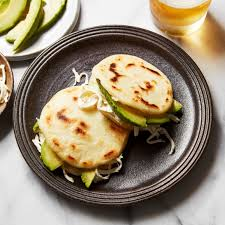

Arepas

The Original Arepa
The Arepa is a traditional venezuelan dish made with corn flour and water,
usually made for breakfast but it can be eaten at anytime of day and for any meal.
It's a very simple recipe, you only need 3 ingredients, 30mins of your time and one pan
Ingredients
- Corn Flour
- Water
- Oil (for cooking)
How To Make An Arepa
- Dissolve salt into the water and slowly add the masarepa until a loose dough forms,
stirring with a spoon or your hands.
- Once you get your dough where it should be,
let it rest for 5 minutes. Then scoop out fist-size portions and form into a ball.
- Once your arepas are formed, simply pan-fry in a little oil to form a crust (a little deep blackening is OK!),
and then finish in the oven to ensure the centers are cooked through (optional but recommended). Then enjoy!